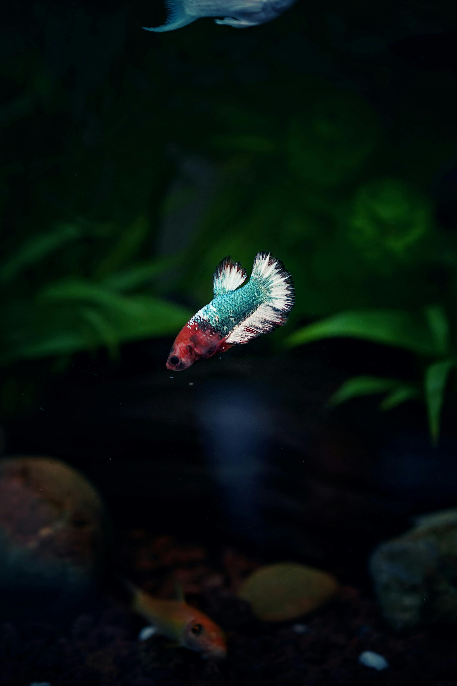

Check your readiness before you buy a betta fish!
𓆝 ⋆｡𖦹°‧⋆.ೃ࿔*:･
This website is a beginner-friendly public resource that helps people think more carefully before buying a betta fish. The main interactive feature is a readiness quiz, but the larger purpose of the site is to support responsible care, learning, and preparation.
Bettas are often treated as simple “starter” pets, even though proper care still requires planning, equipment, time, money, and consistency. This site is meant to slow that process down and help users reflect before making a decision.
After completing the quiz, users can review their result, explore related care topics, and visit the reference section for supporting sources.
What this helps with
⋅˚₊‧ 𓆟 ‧₊˚ ⋅
- Understanding whether you are prepared for the basics of betta care
- Reviewing setup, water quality, maintenance, feeding, and emergency planning
- Connecting quiz results to more detailed learning content
- Encouraging responsible planning instead of impulse buying